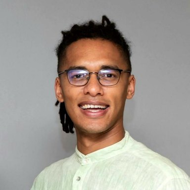

Research field
Safe and certifiable learning-based control
We establish stability and safety guarantees for robot behaviour. These guarantees still hold when the components producing the behaviour were learned from data rather than designed.
About this field
A controller that usually works is not the same as one that provably will not fail. We establish stability and safety guarantees that still hold when the components producing the behaviour were learned from data rather than designed.
People
Hozefa Jesawada
The research covers safe learning-based control for soft and continuum robots. It also develops Grassmannian methods for null-space control.
Hozefa Jesawada is a Postdoctoral Researcher at New York University Abu Dhabi. He earned his PhD in Information Technologies for Engineering from the University of Sannio, Italy, and subsequently worked as a postdoctoral researcher at the University of Salerno. His research focuses on reliable decision-making and control for robotics, combining tools from optimization, uncertainty-aware learning, inverse optimal control, and robust planning.
He is particularly interested in how principled learning methods can support embodied intelligence in real robotic systems, including manipulation, model-based formal control, and safety-aware autonomy.

Dean Pretorius
The research applies Koopman-operator methods to nonlinear dynamics. It focuses on systems with switching and contact.
Dean Pretorius is a student of the PhD in Astrophysics and Space Systems (PASS) program at NYUAD. His research interests are in understanding how robots adapt to discontinuous movements in the real world. During his PhD, he will be pushing the boundaries of science and engineering to understand how robots adapt to discontinuous movements in space.
In 2022, Dean graduated from Stellenbosch University in South Africa with a B.Eng in Electrical and Electronic Engineering.
Omar Mostafa
The research is on stable robot learning, including stable dynamical-systems control. It also covers vision-language-guided policy learning and simulation environments for manipulation.
Omar Mostafa is a Global PhD student in Electrical and Computer Engineering. His research interests are robot learning and control, with a focus on physics-informed reinforcement learning and world models for robotic manipulation.
Previously: Graduated magna cum laude from NYU Abu Dhabi with a bachelor’s degree in Electrical Engineering.
Narayana Reddy Marthala
The research covers contact control for space robots. The robots studied are dual-arm and free-floating.
Publications since 2024
Safe and Stable Neural Network Dynamical Systems for Robot Motion Planning
IEEE Robotics and Automation Letters (RA-L), vol. 11, no. 3, pp. 3111–3118
@article{binny2026safe, author = {Binny, A. E. and Anand, M. and Kussaba, H. T. M. and Chen, L. and Agrawal, S. and Abu-Dakka, F. J. and Swikir, A.}, title = {{Safe and Stable Neural Network Dynamical Systems for Robot Motion Planning}}, journal = {IEEE Robotics and Automation Letters}, year = {2026}, volume = {11}, number = {3}, pages = {3111--3118}, doi = {10.1109/LRA.2026.3655207}, eprint = {2511.20593}, archivePrefix = {arXiv} }Learning-Based Robust Control: Unifying Exploration and Distributional Robustness for Reliable Robotics via Free Energy
IEEE International Conference on Robotics and Automation (ICRA)
@inproceedings{jesawada2026learningbased, author = {Jesawada, H. and Russo, G. and Swikir, A. and Abu-Dakka, F.}, title = {{Learning-Based Robust Control: Unifying Exploration and Distributional Robustness for Reliable Robotics via Free Energy}}, booktitle = {IEEE International Conference on Robotics and Automation (ICRA)}, year = {2026}, address = {Vienna, Austria}, eprint = {2603.06831}, archivePrefix = {arXiv} }Safe Execution of Learned Orientation Skills with Conic Control Barrier Functions
IEEE International Conference on Robotics and Automation (ICRA)
@inproceedings{shen2024safe, author = {Shen, Z. and Saveriano, M. and Abu-Dakka, F. J. and Haddadin, S.}, title = {{Safe Execution of Learned Orientation Skills with Conic Control Barrier Functions}}, booktitle = {IEEE International Conference on Robotics and Automation (ICRA)}, year = {2024}, pages = {13376--13382}, publisher = {IEEE}, address = {Yokohama, Japan}, doi = {10.1109/ICRA57147.2024.10611325} }Formal Methods for Robotic Manipulation: A Survey
Preprint HAL preprint — not yet peer-reviewed
@misc{zhu2026formal, author = {Zhu, Yancheng and Kumar, Ashok and Kussaba, Hugo Tadashi and Liu, Wenliang and Abu-Dakka, Fares and Swikir, Abdalla}, title = {{Formal Methods for Robotic Manipulation: A Survey}}, year = {2026}, howpublished = {HAL hal-05533865v1}, note = {Preprint, not yet peer-reviewed}, url = {https://hal.science/hal-05533865v1} }CSymPlan: Certified Symbolic Planning and Control for High-DOF Manipulators
Preprint arXiv preprint — not yet peer-reviewed
@misc{narendra2026csymplan, author = {Narendra, Aditya and Saini, Ashok Kumar and Anand, Mahathi and Khaled, Mahmoud and Abu-Dakka, Fares J. and Swikir, Abdalla}, title = {{CSymPlan: Certified Symbolic Planning and Control for High-DOF Manipulators}}, year = {2026}, eprint = {2608.22983}, archivePrefix = {arXiv}, note = {Preprint, not yet peer-reviewed}, url = {https://arxiv.org/abs/2608.22983} }Stable Robot Motions on Manifolds: Learning Lyapunov-Constrained Neural Manifold ODEs
Preprint arXiv preprint — not yet peer-reviewed
@misc{boetius2025stable, author = {Boetius, David and Abdelnaby, Abdelrahman and Kumar, Ashok and Leue, Stefan and Swikir, Abdalla and Abu-Dakka, Fares J.}, title = {{Stable Robot Motions on Manifolds: Learning Lyapunov-Constrained Neural Manifold ODEs}}, year = {2025}, eprint = {2510.05707}, archivePrefix = {arXiv}, note = {Preprint, not yet peer-reviewed}, url = {https://arxiv.org/abs/2510.05707} }